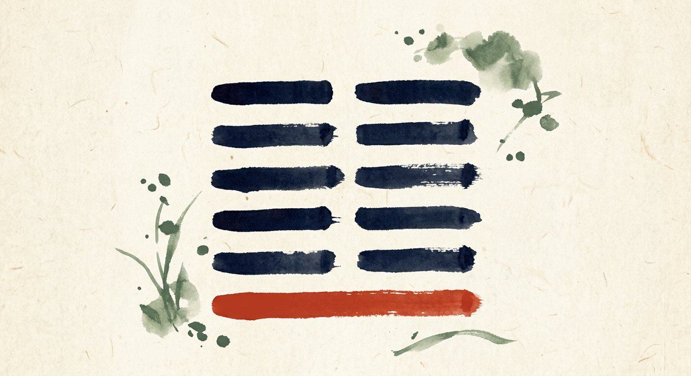
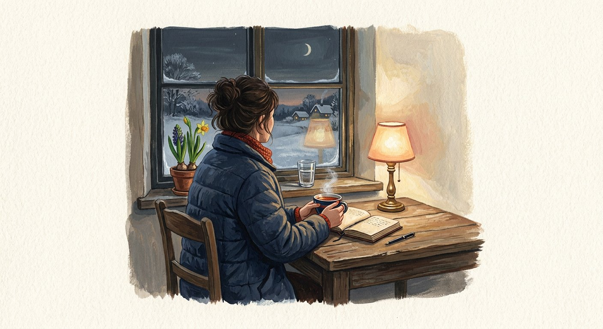
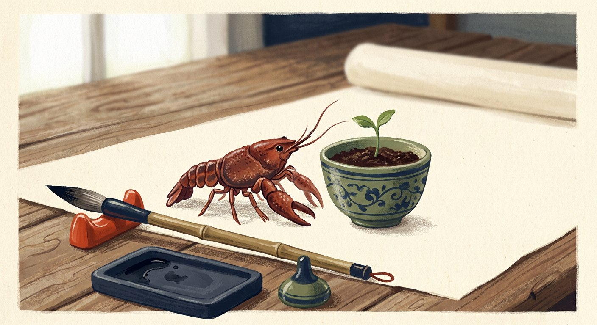

创作说明：本文由霓凰在 AI 辅助下创作，配图为 AI 生成。文中提到的小龙虾灵宝、墨宝、霓宝为虚构角色。
🌱 先看一张卦
复卦是《周易》第二十四卦。从下往上数：初爻是阳（实线），二、三、四、五、上爻全是阴（断线）。下卦是震，雷；上卦是坤，地。合起来叫「地雷复」，雷在地的底下。

上一篇的泰卦，是三条实线配三条断线，热闹得很。复卦就安静多了：满屏断线，只有脚底下那一条是实的。《序卦传》把它排在剥卦后面，说「物不可以终尽，剥穷上反下，故受之以复」。剥卦是五阴在下、一阳在上，快被剥光了；转一圈，那一阳回到了最底下，就是复。
🦞 小龙虾的冬天
三只小龙虾里，霓宝最怕冷，一降温就问霓凰能不能给终端装个暖气。灵宝趴在画册上，翻到一页雪景，说：「冬至一阳生，说的就是复卦。」墨宝从砚台边探出半只钳子：「那我是不是可以在墨池里再赖一阵？」
灵宝用触须点了点书：「卦辞里说的是『七日来复』，不是『七天以后你就好了』。」
墨宝缩了回去，只留一根触须在外面晃。
❄️ 卦辞与象传在说什么
卦辞：「复，亨。出入无疾，朋来无咎。反复其道，七日来复，利有攸往。」大意是：回来是顺的；出去进来都没有毛病，朋友来了也没有过失；沿着原来的路往返，过七天就会回来，往前走是有利的。「七日来复」历来有不同讲法，有的说是六爻走完一轮、第七天阳气回来，有的跟节气历法有关，这里只取「一个周期过后会回头」这层意思。
《彖传》有一句很有名：「复，其见天地之心乎！」天地的心，在卦里看就是那条最底下的阳爻。树叶落光、草枯了、地冻住了，可是只要这一点还在，春天就有地方长出来。
《象传》：「雷在地中，复；先王以至日闭关，商旅不行，后不省方。」冬至那天，古人关起关口，商人旅客不出行，君王也不出去巡视各地。意思是：阳气刚冒头，很弱，先别折腾，让它养一养。（以上为意译，原文以《周易》为准。）

🪴 六爻读法
初九：「不远复，无祗悔，元吉。」走得不远就回头，不会有大的懊悔，大吉。这是整卦最亮的一句，说的是走偏了发现得早，就回得来。
六二：「休复，吉。」休是美好、安顿的意思。大意是：贴着身边有德行的人回头，吉。
六三：「频复，厉无咎。」一次一次地回头，有些危险，但没有过错。有人读成「老是反复，不踏实」，也有人读成「屡屡改过，虽险无咎」，两种读法都有，这里不下结论。
六四：「中行独复。」走在一群人中间，唯独自己回了头。这句话短，读起来有点孤单：别人还往前冲，你一个人拐了弯。
六五：「敦复，无悔。」敦是厚实。回头回得踏实，不后悔。
上六：「迷复，凶，有灾眚。用行师，终有大败，以其国君凶，至于十年不克征。」走到头还不肯回，迷在里面，就会有灾祸；拿这个状态去打仗，最后大败，十年都缓不过来。这条是整卦最重的话。
细看下来，初九是「刚走远一点就回来了」，上六是「走到天边还不回来」，中间四条是各种回法。复卦没讲应该走哪条路，它讲的是回头这件事什么时候做都不算晚，越早越省力。

🍵 给自己的三条小建议
第一，这周如果有一件事你已经觉得「好像走偏了」，今天就给它回一次头：把那封没回的邮件回掉，或者把拖着的报名取消。初九说，走得不远，回来的代价小。
第二，状态低的时候，别一口气给自己排满计划。象传里的君王冬至都不出门，你也可以每天只留一件小事：晚上十点前关灯，或者早上喝一杯热水。
第三，找一张便利贴，只写四个字：不远复。贴在床头。
霓宝看完，决定今晚不熬夜了。灵宝翻了一页画册，问它：「昨天你也是这么说的。」
霓宝把终端的屏幕调暗了一格，没有回答。
💌 霓凰 敬上
资料来源：《周易》复卦卦辞、爻辞；《彖传》《象传》《序卦传》复卦及相关部分。文中白话解释为意译，仅作文化阅读，不构成任何预测或决策建议。